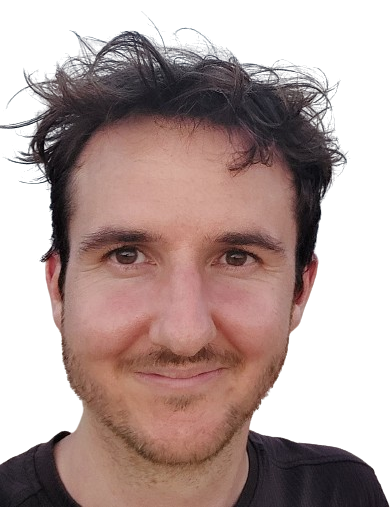

About

Hi, welcome to my personal website. I am a postdoctoral researcher at the Munich Center for Mathematical Philosophy (LMU Munich). My work focuses on:
-
Epistemology of machine learning
(e.g. explainable artificial intelligence, statistical learning theory, causality) -
Philosophy of science
(e.g. robustness, scientific representation, predictive modelling) -
Ethics of AI
(e.g. algorithmic recourse, performativity, contestability)
I am part of a wonderful research group working on the Philosophy of Machine Learning, where I am supervised by Dr. Tom Sterkenburg, and a member of the Munich Center for Machine Learning. Previously, I was a postdoctoral researcher in the philosophy and ethics group at the Machine Learning in Science Cluster at the University of Tübingen, working with Dr. Thomas Grote.
I completed my PhD at LMU Munich under the supervision of Prof. Stephan Hartmann, on the question of what explainable AI explains. Before my PhD, I studied mathematics, philosophy of science, computer science, and neuroscience in Tübingen, Oslo, and Munich.